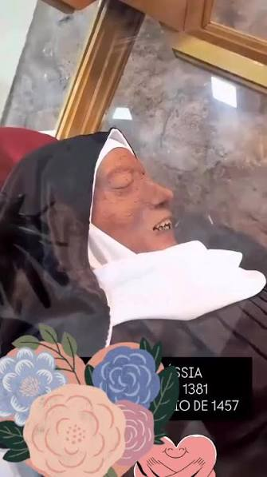

Blood Dazzler · Background vocabulary
Pickaninny
A racist term and caricature of Black children: exaggerated features, ragged clothes, and demeaning portrayals.


Ashy
Dry skin with a grayish or whitish, flaky appearance, especially visible on darker skin. Dryness—not dirt.

“Black people can’t swim”
A racist stereotype, not a racial inability. Segregated pools and unequal access to swimming lessons kept many Black Americans from learning to swim. The stereotype turns that history of exclusion into a claim about an entire people.
History: Jeff Wiltse, “The Black–White Swimming Disparity in America”
Saint Rita
Patron saint of impossible and desperate causes.
Incorrupt: the religious description of a body believed to have escaped ordinary decay. Rita’s body is preserved in Cascia, Italy.

Downbeat · “Buried,” pp. 63–64
The first, usually strongest beat in a musical measure: ONE–two–three–four.
“Plunge. Push. Lift. Toss it.” The speaker makes a repeated rhythm to coordinate his shovel strokes and keep digging.